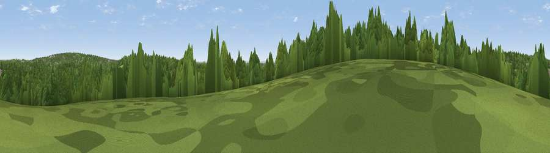

Viewpoint near Ruislip
#44140 in England · top 56% of its area beats it · near RuislipWhere it is
The exact computed spot (TQ 08375 89825). Click the marker for map links.
The view, rendered

A 360° render of this exact spot computed from the terrain model, tree cover and land cover — summer colours, afternoon light, calibrated against photographs of famous viewpoints. Real trees, hedges and buildings will differ in detail.
The panorama
Grey silhouette: terrain skyline in each direction (720 bearings, Earth curvature and refraction included). Dashed green: skyline with trees (+15 m) and buildings (+8 m) as obstacles. Blue strip: how far the ground is visible on each bearing.
Where the view opens
Wedge length = distance to the farthest visible ground on that bearing (vegetation-aware). Rings at 10, 25 and 50 km.
What fills the view
71% woodland · 17% grassland · 10% built-up · 2% water
Angular shares of the visible panorama (visual magnitude), not map area. Landscape diversity 0.39 (0–1 Shannon).
Key numbers
More beautiful places nearby
The staircase of upgrades: each row has a higher view potential than everything closer. Driving times are estimates from straight-line distance, calibrated against real road routing — check an actual route before setting out.
| Place | Direction | Drive | Score |
|---|---|---|---|
| Viewpoint near Ruislip | E · 1 km | ~4 min | 22.4 |
| Potter Street Hill | NE · 3 km | ~7 min | 24.9 |
| Batchworth Heath | N · 3 km | ~7 min | 25.0 |
| Viewpoint near South Oxhey | NE · 3 km | ~7 min | 26.4 |
| Viewpoint near South Harefield | SW · 3 km | ~8 min | 29.6 |
| Viewpoint near Hayes End | SSE · 7 km | ~14 min | 37.6 |
| Harrow on the Hill | ESE · 7 km | ~15 min | 42.3 |
| Viewpoint near Tring | NW · 26 km | ~42 min | 50.3 |
51.59685, -0.43677 · source: screening · position refined by local search. Computed location — check access rights before visiting.